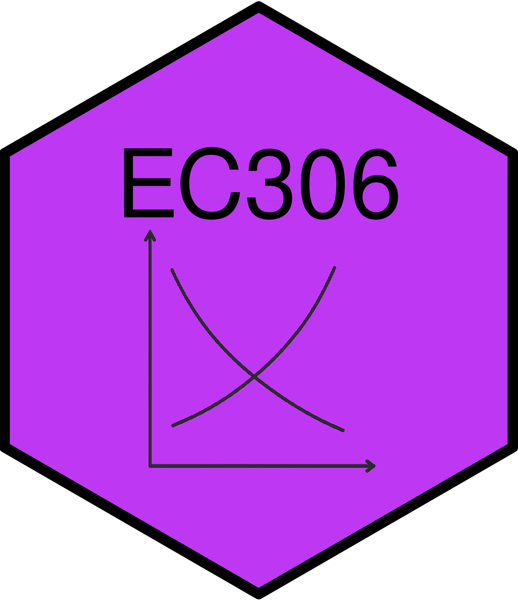
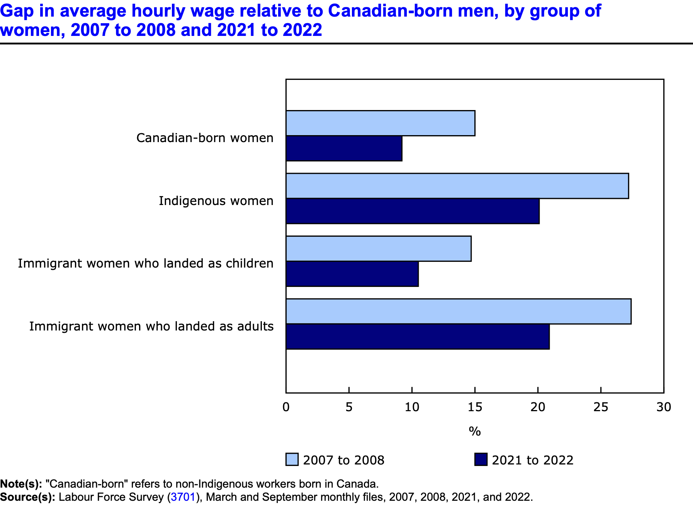
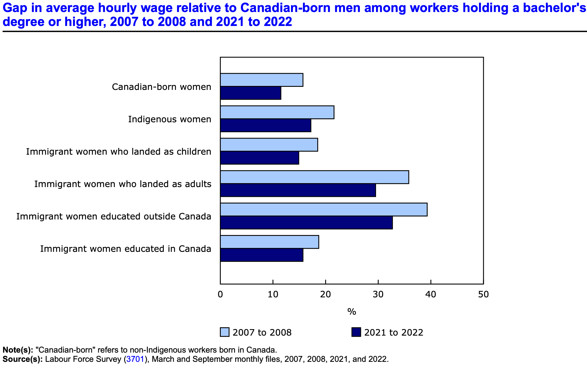
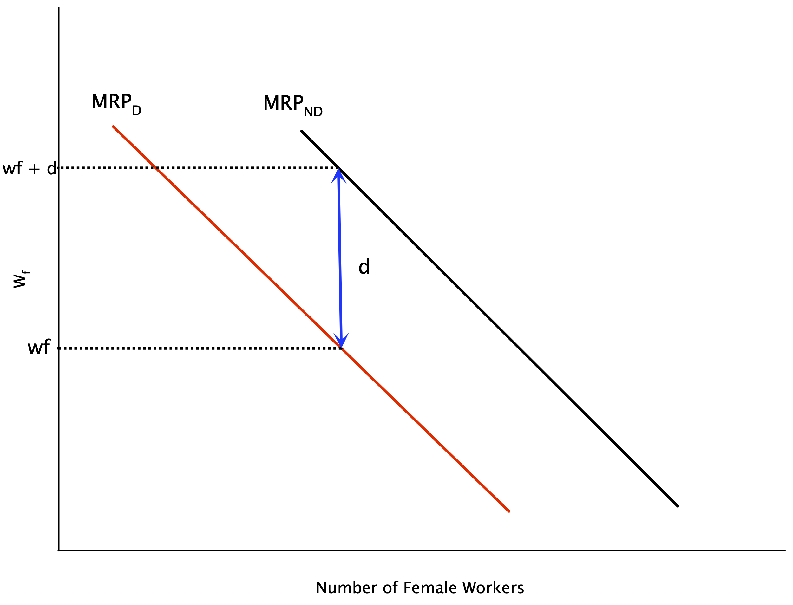
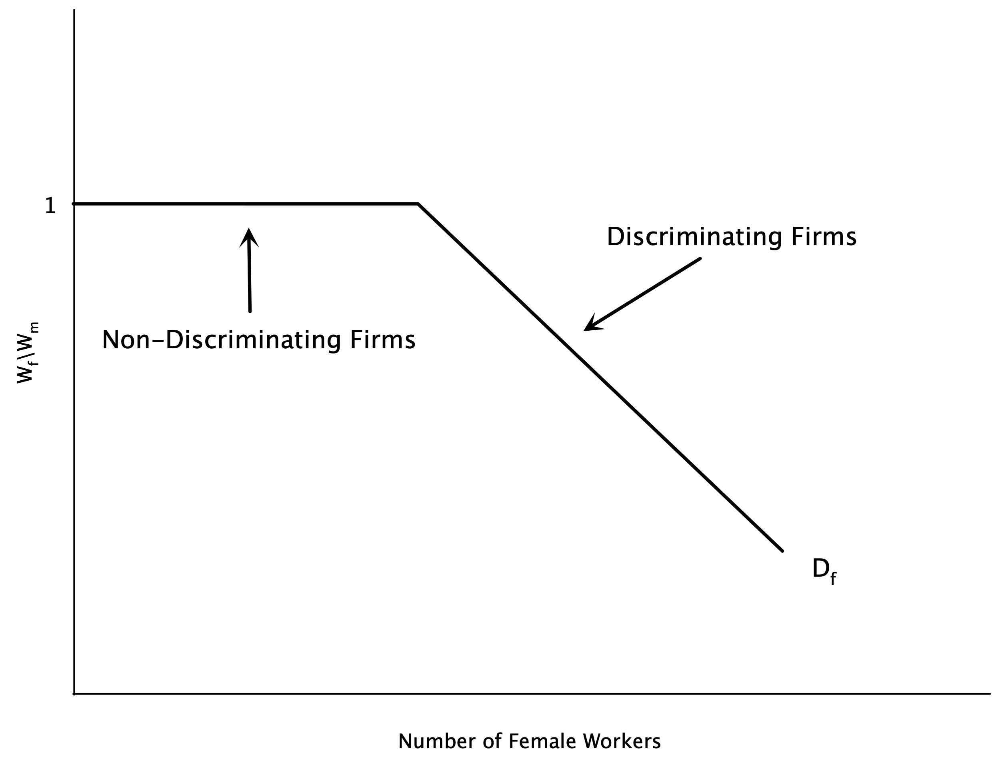
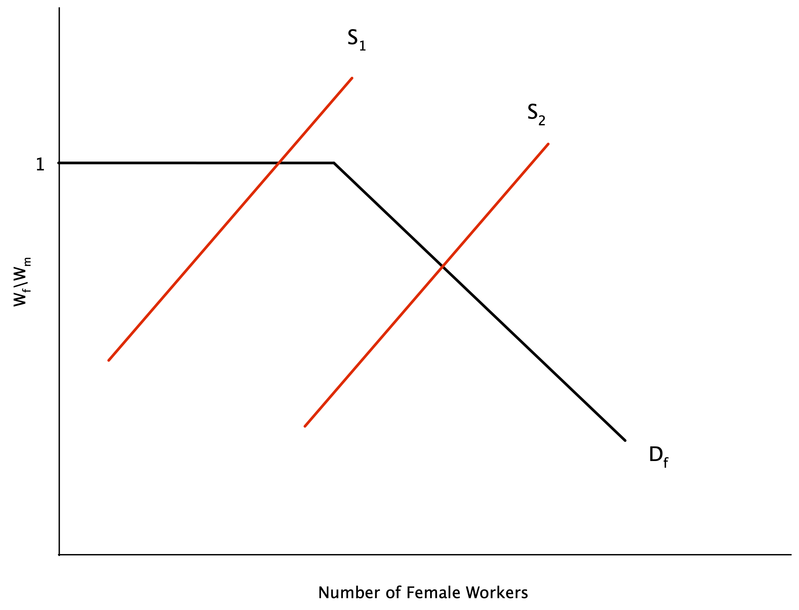
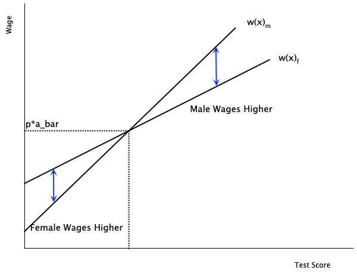
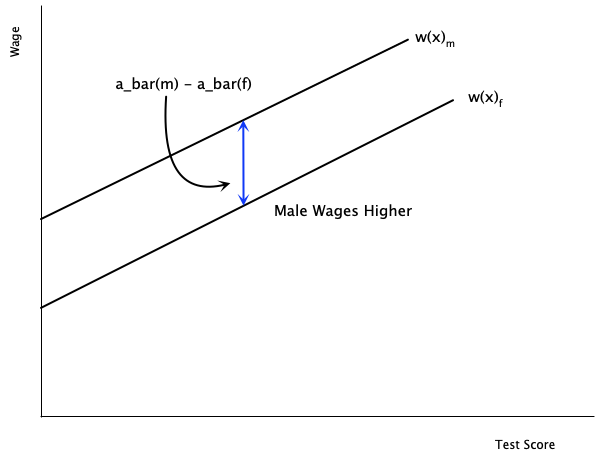

Discrimination and Male-Female Earnings Differentials
EC306- Wages and Employment
Justin Smith
Wilfrid Laurier University
Fall 2025

Goals of This Section
Goals of This Section
Discuss trends in educational attainment in Canada
Introduce Human Capital Theory of education investment
Introduce Signalling Model of education investment
Discuss empirical methods to estimate returns to schooling
Review empirical evidence on returns to schooling
Discuss job training
Introduction
Male and Female Earnings

Male and Female Earnings

Male and Female Earnings

Male and Female Earnings
Clearly men and women earn different amounts on average
There are two broad explanations for this gap:
Differences in characteristics (education, experience, occupation, industry, hours worked, etc.)
Differences in the returns to those characteristics (discrimination)
Our models so far have not left room for discrimination
- We treated all workers as the same
- So there should not be any differences in returns
Male and Female Earnings
In this section, we explore economic theories of discrimination
- Can come from employers, customers, co-workers
- Can be statistical or taste-based
It is difficult empirically to estimate discrimination
- Need to control for all relevant characteristics
- Need to separate out differences in characteristics from differences in returns
There are methods that can help us estimate discrimination
- Oaxaca-Blinder decomposition
- Audit studies
- Experiments
Theories of Discrimination
Demand-Side Theories
Demand theories focus on the behavior of employers in demanding labor
Can happen for various reasons:
- Pure prejudice
- Customer preference to buy from male workers
- Male aversion to working with women
These all cause a fall in the demand for women relative to men in the labour market
- Reduces wages and employment of female workers
Taste-Based Discrimination
Theory of taste-based discrimination pioneered by Becker (1957)
Imagine that firms produce according to the production function:
\[y = f(N_m + N_w)\]
With \(N_m\) indicating the number of male workers, and \(N_f\) indicating the number of female workers
So in a competitive market their profits are
\[ \pi = p \cdot f(N_m + N_w) - w_m N_m - w_w N_w \]
- With \(w_m\) indicating the wage of male workers, and \(w_f\) indicating the wage of female workers
Taste-Based Discrimination
- Firms do not maximize profit strictly, but instead maximize a utility function
\[ U = \pi - d \cdot N_w \]
Utility is partly a function of profit
But also includes \(d\), which measures the degree of discrimination
- if \(d = 0\), no discrimination and maximizing utility is the same as maximizing profit
- if \(d=0\) firms get a disutility from hiring women
Taste-Based Discrimination
The first order conditions for utility maximization are: \[ p \cdot MP_{N_m} = w_m \] \[ p \cdot MP_{N_w} = w_w + d \]
For both men and women, firms hire up to the point where the value of the marginal product equals the cost of hiring
- But for women, there is an additional cost \(d\) due to discrimination
If \(w_m = w_f\), and men and women are equally productive, this implies the firm hires less women
- Discrimination drives a wedge between wages and the MRP
Taste-Based Discrimination

Graph plots labour demand for women
Discrimination shifts demand curve left
Without discrimination, firm hires where \(w_f = MRP_{ND}\)
- \(ND\) = non-discriminatory
With discrimination, firm hires where \(w_f + d = MRP_D\)
- Or equivalently \(w_f = MRP_D - d\)
Implies a lower level of female labour
Taste-Based Discrimination
Above analysis is for a single employer
Employers discriminate along a spectrum
- Some have a high \(d\), some have a low or no \(d\)
Suppose women are able to seek out the non-discriminating employers
If we order the firms from lowest to highest by the amount of discrimination
- We can get the market demand curve by summing the individual demand curves horizontally
This demand curve is plotted on the next slide
Taste-Based Discrimination

Graph plots demand for female labour in the market
On the vertical axis is the ration of female to male wages
For non-discriminating firms, this ratio is 1
- A certain set of firms will hire women at this ratio
- This is the flat portion of the demand curve
As the supply of women grows, they must work at more discriminating firms
- These firms will only hire when the wage ratio falls
Taste-Based Discrimination

If the supply of female labour is small enough, they can work at non-discriminating firms
- Wage ratio is 1
With a larger supply, some will have to work at discriminating firms
- Wage ratio falls below 1
- This is where the demand curve slopes downwards
- Wage gap emerges
Statistical Discrimination
Taste-based discrimination relies on employers having a “taste” for discrimination
- Overt prejudice
Some discrimination may happen because of imperfect information
- Employers do not know the productivity of workers perfectly
Instead they use signals to infer worker quality
With statistical discrimination firms use group characteristics to infer individual productivity
- If one group has lower average productivity, firms may pay them less on average
Statistical Discrimination
Theory
- Assume that the abilities of male and female workers are distributed with means \(\bar{a}_{m}\) and \(\bar{a}_{f}\)
- Suppose the firm has access to a signal of ability \(x\) for each person
- Actual ability is not known with certainty, but expected ability is
\[a(x) = \bar{a} + \alpha (x - \bar{a})\]
- where \(\alpha\) is the reliability of the signal
- If \(\alpha = 0\), the signal provides no information beyond the average
- If \(\alpha = 1\), the signal is perfectly informative
- If \(\alpha = 0\), the signal provides no information beyond the average
- Workers are paid a wage equal to their marginal revenue product
Statistical Discrimination
- Paying workers their marginal revenue product implies
\[w(x) = p a(x) = p \bar{a} + p \alpha (x - \bar{a})\]
- To analyze discrimination, assume \(\bar{a}_{m} = \bar{a}_{f}\)
- Men and women are equally productive on average
- Assume the signal is more reliable for men than for women
- If \(\alpha_m > \alpha_f\)
- Differences arise between workers who score the same on the signal
- If a man and woman score above average \((x - \bar{a} > 0)\), then \(w(x)_m > w(x)_f\)
- If a man and woman score below average \((x - \bar{a} < 0)\), then \(w(x)_m < w(x)_f\)
Statistical Discrimination

In this graph we have wages as a function of the signal
The male line is steeper because the signal is more reliable (\(\alpha_m > \alpha_f\))
For test scores above average, men are paid more
For test scores below average, women are paid more
At the average, they are paid the same
Statistical Discrimination
There are no underlying differences between males and females
- Differences in wages arise because of differences in the quality of the signal
- Firms place more weight on average ability for female workers
- Firms place more weight on the actual signal for male workers
At low levels of the signal, women are paid more than men
But where does the assumption \(\alpha_m > \alpha_f\) come from
- Possibly related to prejudicial attitudes of firms
- Some believe standardized tests favour males
Statistical Discrimination
There may also be differences in \(\bar{a}_m\) and \(\bar{a}_f\)
- Possibly due to pre-market discrimination leading to lower human capital among women
In this case, males are paid more at every signal level
Wage differences do not necessarily arise from overt discrimination
- They may originate in differences in information signals
- But it is difficult to explain why such differences in signal quality exist
Statistical Discrimination

In this graph the quality of the signal is the same
Slopes of the lines are the same
But there are differences in average productivity
- Male line lies above female line
Men will be paid more because of the average difference